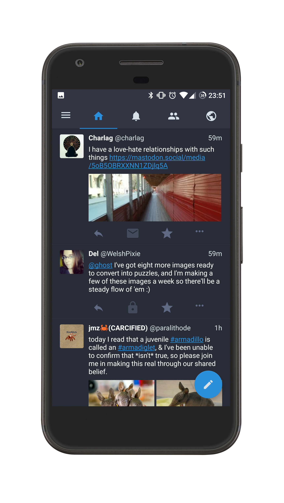

Tusky
An Android app for the distributed social network Mastodon

The app is totally open source, and its source code can be found at Tusky's
Github page.
For news and updates, follow @Tusky@mastodon.social.


Release Direct Downloads
To install these, allowing installation from unknown sources must be
enabled on the device. It should be in the device's settings under
Settings → Security. More info can be found on the Android
alternative distribution options page
Full Releases
- Tusky-1.0.0.apk
- Tusky-1.0.1.apk
- Tusky-1.0.2.apk
- Tusky-1.0.3.apk
- Tusky-1.1.0.apk
- Tusky-1.1.1.apk
- Tusky-1.1.2.apk
- Tusky-1.1.3.apk (Google Play and
Amazon
release)
- Tusky-1.1.4.apk
Beta Releases
- Tusky-1.1.4-beta.1.apk
- Tusky-1.1.4-beta.2.apk
- Tusky-1.1.4-beta.3.apk
- Tusky-1.1.4-beta.4.apk
- Tusky-1.1.4-beta.5.apk
- Tusky-1.1.4-beta.6.apk
- Tusky-1.1.4-beta.7.apk
Early Access Versions
- Tusky-1.0.0-alpha.3.apk
- Tusky-1.0.0-alpha.4.apk
- Tusky-1.0.0-alpha.5.apk
- Tusky-1.0.0-alpha.6.apk
- Tusky-1.0.0-alpha.7.apk
- Tusky-1.0.0-alpha.8.apk
Experimental Versions
- Tusky-1.1.1-handshake-test-1.apk
- Tusky-1.1.1-handshake-test-2.apk
-
Tusky-1.1.4-bc-test-1.apk